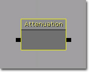
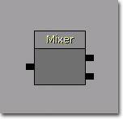

UDN
Search public documentation:
SoundCueReferenceCH
English Translation
日本語訳
한국어
Interested in the Unreal Engine?
Visit the Unreal Technology site.
Looking for jobs and company info?
Check out the Epic games site.
Questions about support via UDN?
Contact the UDN Staff
日本語訳
한국어
Interested in the Unreal Engine?
Visit the Unreal Technology site.
Looking for jobs and company info?
Check out the Epic games site.
Questions about support via UDN?
Contact the UDN Staff
Sound Cue参考指南
概述
Attenuation Node(衰减节点)

Attenuation(衰减)- Attenuate(衰减) - 如果该项为true，那么节点将使得输入音效随着距离淡出。
- Spatialize(空间化) - 如果该项为true，节点将会把输入声效放置到3D空间中。
- dB Attenuation At Max（在最大距离处的分贝衰减） - 设置在最大距离处的音量，以分贝为单位。
- Distance Algorithm(距离算法) - 设置当衰减输入声效时所使用的插值方法。
- ATTENUATION_Linear - 随着距离线性衰减输入声效。
- ATTENUATION_Logarithmic - 随着距离按照对数型衰减声效。
- ATTENUATION_Inverse - 随着距离按照反函数衰减输入声效。
- ATTENUATION_LogReverse - 随着距离使用反对数函数衰减输入声效。
- ATTENUATION_NaturalSound - 使用模拟声效随着距离自然衰减的特殊函数来衰减声效。
- Distance Type - 设置要使用的特殊衰减模式。
- SOUNDDISTANCE_Normal - 在所有坐标轴上随着距离正常衰减。
- SOUNDDISTANCE_InfiniteXYPlane - 仅使用Z-轴上的距离衰减输入声效。
- SOUNDDISTANCE_InfiniteXZPlane - 仅适用Y-轴上的距离衰减输入声效。
- SOUNDDISTANCE_InfiniteYZPlane - 仅适用X-轴上的距离衰减输入声效。
- Radius Min - 从声效的原点到开始发生衰减处的距离。在0.0到这个距离之间声效的音量是100%。
- Radius Max - 从声效的原点处到衰减结束处的距离。在 Radius Min(最小半径) 到这个距离之间输入声效从100%衰减到0%。
- Attenuate With LPF - 如果该项为true，则启用低通滤波衰减。
- LPFRadius Min - 设置从声效的原点到开始应用低通滤波处的距离。
- LPFRadius Max - 设置从声效原点到应用最大量低通滤波处的距离。
Concatenator Node(连接器节点）
 声效节点Concatenator(连接器)
声效节点Concatenator(连接器)
- Input Volume(输入音量) - 每个输入音效所使用的音量列表，可以标准化具有不同源音量的声效。
Delay Node(延迟节点)
 Delay(延迟)
Delay(延迟)
- Delay [Min/Max] - 设置 Delay Node的[最小/最大]暂停时间量。
Distance CrossFade Node(距离交叉渐变节点)

声效节点Distance CrossFade(距离交叉渐变)- Cross Fade Input - 进行交叉淡入淡出的输入声效。每个声效具有以下属性：
- Fade In Distance [Start/End] - 设置从声效原点到[开始/完成]淡入到这个输入声效的距离。
- Fade Out Distance [Start/End] - 设置从声效原点到[开始/完成]淡出到这个输入声效的距离。
- Volume - 设置当完成淡入时该声效的音量。
Looping Node(循环节点)
 Looping(循环)
Looping(循环)
- Loop Indefinitely - 如果该项为true，那么不管 Loop Count Min 和 Loop Count Max 的值是多少，它都会无限地循环播放。
- Loop Count [Min/Max] - 设置输入音效的[最小/最大]循环次数。
Mixer Node（混合器节点）
- Input Volume(输入音量) - 每个输入音效所使用的音量列表，可以标准化具有不同源音量的声效。
Modulator Node(调制器节点)
 Modulation(调制)
Modulation(调制)
- Pitch [Min/Max] - 设置输入音效的[最小/最大] 音调。
- Volume [Min/Max] -设置输入音效的[最小/最大] 音量。
Continuous Modulator Node(持续调制器节点)
 声效节点Modulator Continuous(持续调制器)
声效节点Modulator Continuous(持续调制器)
- [Pitch/Volume] Modulation - 控制输入音效的[音调/音量]的分布。默认为均匀分布，但是可以在编辑器中将其改为任何类型。
Oscillator Node(振荡器节点)
 Oscillator(振荡器)
Oscillator(振荡器)
- Modulate [Volume/Pitch] - 如果该项为true，则启用 [音量/音调]调制。
- Amplitude [Min/Max] - 正弦波调制的振幅，以值1为中心震荡。比如，振幅为.25 ，那么则在值.75和1.25之间进行调制。
- Frequency [Min/Max] - 正弦曲线调制的频率，该值除以2等于赫兹数。 比如，Frequency（频率）为20，那么震荡速率是10赫兹(每秒的次数)。 [Min/Max]域用于随机化选择。
- Offset [Min/Max] - 正弦波的偏移量值；一般称为相位。 这里所提供的任何值都将和2*pi相乘。[Min/Max]域用于随机化选择。
- Center [Min/Max] - 中心值.5将会使得震荡围绕.5进行，[Min/Max]域提供了随机化选择。
Random Node(随机节点)
 声效节点Random
声效节点Random
- Weights - 每个输入声效的权重列表，决定了选择特定声效的几率。
- Randomize Without Replacement - 如果该项为true，一旦选择过某个音效，那么直到所有输入音效已经播放完为止将不会再次播放它。
示例
 一旦触发，这会同时播放四个音频文件；一旦重新触发，会产生随机变化。
一旦触发，这会同时播放四个音频文件；一旦重新触发，会产生随机变化。
 一旦触发，这会播放一个音频文件；一旦重新触发，会产生随机变化。
一旦触发，这会播放一个音频文件；一旦重新触发，会产生随机变化。
 这把两组随机触发的音频文件混合到了一起。
这把两组随机触发的音频文件混合到了一起。